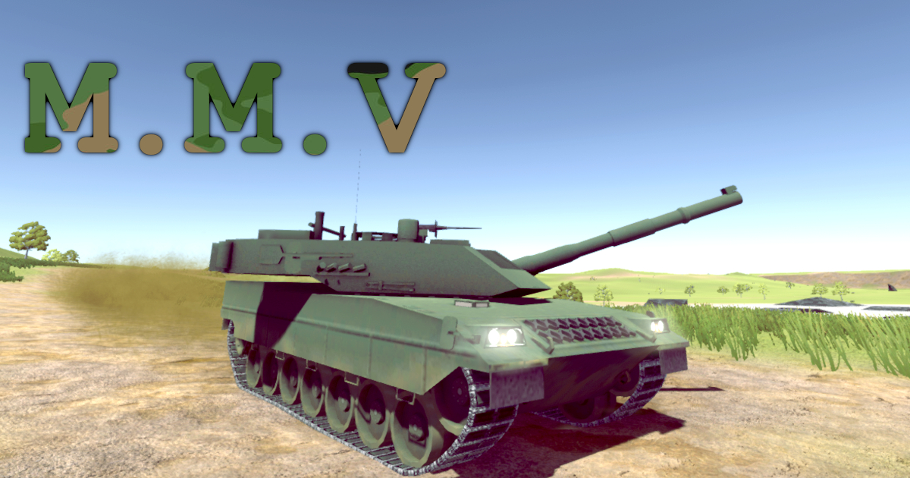

Introduction¶
Modern Military Vehicle System is a military vehicle simulation asset for arcade games. With it you can create wheel and track physics simulation, turret and fire control, support for explosion effects, dust (caused by wheel movement), engine sound and much more. This documentation will help you configure and create your own customizable vehicle.

To start, download the asset available from the Asset Store […] and take a look at the example scene that comes with the project, in the next chapters we will see in more detail all the components that are part of this system.